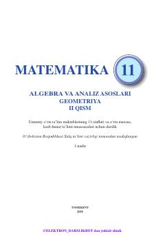

1M11-sinf uchun matematika fanidan darslikning ikkinchi qismi.
Ushbu darslik umumiy o'rta ta'lim maktablarining 11-sinflari va o'rta maxsus, kasb-hunar ta'limi muassasalari uchun mo'ljallangan bo'lib, matematika fani bo'yicha integral va uning tatbiqlari kabi mavzularni qamrab oladi. Kitobda aniq integral yordamida yuzlar va aylanish jismlarining hajmini hisoblashga doir nazariy ma'lumotlar va misollar keltirilgan.